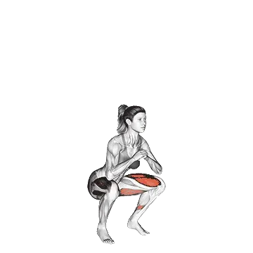

Squat Jump
Squat Jump is a legs exercise focused on Quadriceps, Hamstrings, Gluteus maximus. You can review average reps and rep standards on one page.

Average reps: Intermediate
Reference for an intermediate lifter.
Men
35
Women
33
Squat Jump: Average reps
| Level | ||
|---|---|---|
| Beginner | < 1 | < 1 |
| Novice | 8 | 6 |
| Intermediate | 35 | 33 |
| Advanced | 74 | 65 |
| Elite | 119 | 103 |
Note: These values estimate average reps that can be completed in one set. Bodyweight, range of motion, tempo, and other personal factors can affect performance. See the detailed tables below.
Squat Jump: Rep standards
Men by bodyweight (lb) [Reps]
| Bodyweight | Beginner | Novice | Intermediate | Advanced | Elite |
|---|---|---|---|---|---|
| 110 | < 1 | 1 | 33 | 78 | 131 |
| 120 | < 1 | 3 | 34 | 77 | 128 |
| 130 | < 1 | 5 | 34 | 75 | 124 |
| 140 | < 1 | 6 | 35 | 74 | 121 |
| 150 | < 1 | 7 | 35 | 73 | 117 |
| 160 | < 1 | 7 | 35 | 71 | 114 |
| 170 | < 1 | 8 | 34 | 70 | 111 |
| 180 | < 1 | 8 | 34 | 68 | 108 |
| 190 | < 1 | 8 | 34 | 67 | 105 |
| 200 | < 1 | 9 | 34 | 66 | 103 |
| 210 | < 1 | 9 | 33 | 64 | 100 |
| 220 | < 1 | 9 | 33 | 63 | 98 |
| 230 | < 1 | 9 | 32 | 62 | 95 |
| 240 | < 1 | 9 | 32 | 60 | 93 |
| 250 | < 1 | 9 | 31 | 59 | 91 |
| 260 | < 1 | 9 | 31 | 58 | 89 |
| 270 | < 1 | 9 | 30 | 57 | 87 |
| 280 | < 1 | 9 | 30 | 56 | 85 |
| 290 | < 1 | 9 | 29 | 55 | 83 |
| 300 | < 1 | 9 | 29 | 54 | 81 |
| 310 | < 1 | 9 | 28 | 53 | 80 |
Men by age [Reps]
| Age | Beginner | Novice | Intermediate | Advanced | Elite |
|---|---|---|---|---|---|
| 15 | < 1 | 1 | 25 | 58 | 97 |
| 20 | < 1 | 5 | 33 | 71 | 115 |
| 25 | < 1 | 6 | 35 | 74 | 119 |
| 30 | < 1 | 6 | 35 | 74 | 119 |
| 35 | < 1 | 6 | 35 | 74 | 119 |
| 40 | < 1 | 6 | 35 | 74 | 119 |
| 45 | < 1 | 4 | 31 | 68 | 112 |
| 50 | < 1 | 2 | 28 | 62 | 103 |
| 55 | < 1 | < 1 | 23 | 55 | 93 |
| 60 | < 1 | < 1 | 19 | 48 | 82 |
| 65 | < 1 | < 1 | 14 | 40 | 72 |
| 70 | < 1 | < 1 | 10 | 33 | 61 |
| 75 | < 1 | < 1 | 7 | 27 | 52 |
| 80 | < 1 | < 1 | 3 | 21 | 43 |
| 85 | < 1 | < 1 | < 1 | 15 | 35 |
| 90 | < 1 | < 1 | < 1 | 11 | 29 |
Women by bodyweight (lb) [Reps]
| Bodyweight | Beginner | Novice | Intermediate | Advanced | Elite |
|---|---|---|---|---|---|
| 90 | < 1 | 4 | 31 | 69 | 115 |
| 100 | < 1 | 6 | 32 | 69 | 111 |
| 110 | < 1 | 7 | 33 | 67 | 107 |
| 120 | < 1 | 8 | 33 | 66 | 104 |
| 130 | < 1 | 9 | 33 | 64 | 100 |
| 140 | < 1 | 9 | 33 | 63 | 97 |
| 150 | < 1 | 9 | 32 | 61 | 94 |
| 160 | < 1 | 10 | 32 | 60 | 91 |
| 170 | < 1 | 10 | 31 | 58 | 89 |
| 180 | < 1 | 10 | 31 | 57 | 86 |
| 190 | < 1 | 10 | 30 | 56 | 84 |
| 200 | < 1 | 10 | 30 | 54 | 81 |
| 210 | < 1 | 10 | 29 | 53 | 79 |
| 220 | < 1 | 10 | 29 | 52 | 77 |
| 230 | < 1 | 10 | 28 | 50 | 75 |
| 240 | < 1 | 10 | 27 | 49 | 73 |
| 250 | < 1 | 10 | 27 | 48 | 71 |
| 260 | < 1 | 9 | 26 | 47 | 69 |
Women by age [Reps]
| Age | Beginner | Novice | Intermediate | Advanced | Elite |
|---|---|---|---|---|---|
| 15 | < 1 | 3 | 23 | 51 | 83 |
| 20 | < 1 | 7 | 31 | 63 | 100 |
| 25 | < 1 | 8 | 33 | 65 | 103 |
| 30 | < 1 | 8 | 33 | 65 | 103 |
| 35 | < 1 | 8 | 33 | 65 | 103 |
| 40 | < 1 | 8 | 33 | 65 | 103 |
| 45 | < 1 | 6 | 30 | 61 | 96 |
| 50 | < 1 | 4 | 26 | 55 | 88 |
| 55 | < 1 | 1 | 22 | 49 | 80 |
| 60 | < 1 | < 1 | 17 | 42 | 70 |
| 65 | < 1 | < 1 | 13 | 35 | 60 |
| 70 | < 1 | < 1 | 9 | 28 | 51 |
| 75 | < 1 | < 1 | 6 | 22 | 43 |
| 80 | < 1 | < 1 | 2 | 17 | 35 |
| 85 | < 1 | < 1 | < 1 | 12 | 28 |
| 90 | < 1 | < 1 | < 1 | 9 | 23 |
Note: The table values are reference rep counts for one set. Bodyweight data can help estimate relative load, while age data can show trend differences.
Muscles worked
| Group | Muscles |
|---|---|
| Primary muscles | Quadriceps, Hamstrings, Gluteus maximus |
| Secondary muscles | Calves |
| Stabilizers | External obliques, Erector spinae |
| Grip | None |
Track and analyze in the Shiba app
Review weight, reps, and progress in one place.
World records
Last Updated: July 2, 2026
How to read the table
| Level | Description | Distribution |
|---|---|---|
| Beginner | Has learned proper form and trained consistently for at least 1 month. | Bottom 5% |
| Novice | Has trained consistently for at least 6 months. | Top 80% |
| Intermediate | Has trained consistently for at least 2 years. | Top 50% |
| Advanced | Has trained consistently for more than 5 years. | Top 20% |
| Elite | Has specialized in this exercise for more than 5 years. | Top 5% |
More exercises
Legs
Nordic Hamstring Curl
Legs
Sissy Squat
Legs
Half Squat
Legs
Glute Ham Raise
Legs
Cable Leg Extension
Legs / Cable
Single-Leg Seated Calf Raise
Legs
Side Lunge
Legs
Glute Kickback
Legs
Donkey Calf Raise
Legs
Dumbbell Walking Calf Raise
Legs / Dumbbell
Side Leg Raise
Legs / Bodyweight
Jefferson Squat
Legs